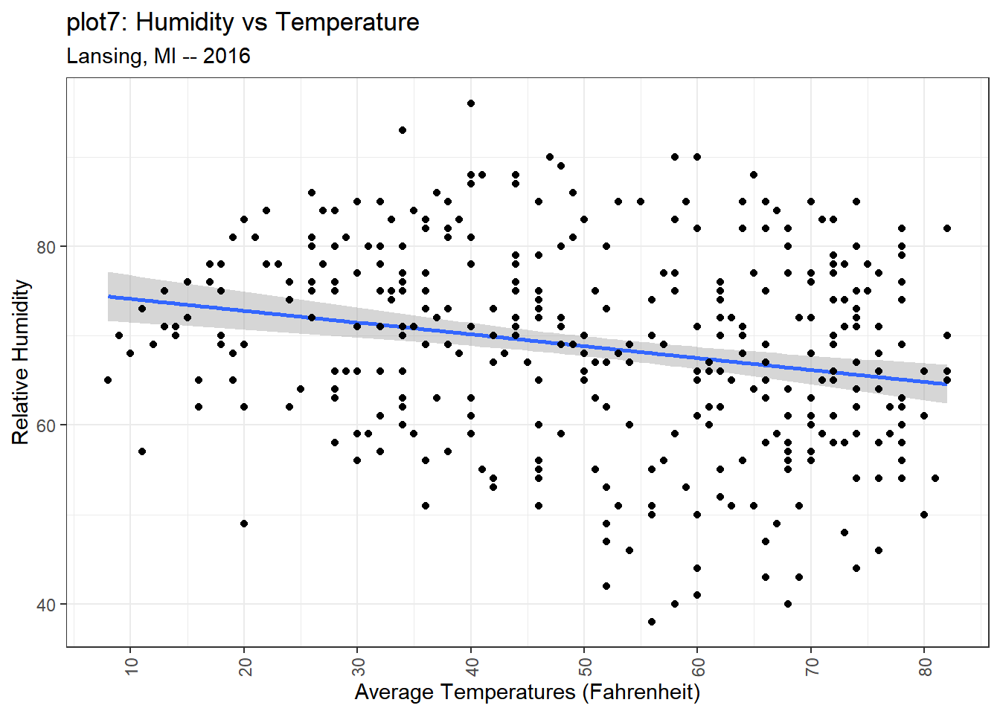

2-01: GGPlot Introduction
0.1 To-do
- handle Source issues (especially from plots people have to cycle through)
1 Purpose
Create a scatterplot in GGPlot
Modify the scatterplot using components
Add a second plot
1.1 Code for the lesson
The script for this lesson is here
The Lansing2016Noaa.csv is here
2 GGPlot package
We are going to use the GGPlot package so we need to add the ggplot2 library to the script.
rm(list=ls()); # clear the Environment tab
library(package=ggplot2); # include all GGPlot2 functionsThe second line gives your script access to all of the functions in the GGPlot2 package. Note: ggplot2 is technically the third version of GGPlot – but no one uses the first two versions (ggplot and ggplot1) anymore.
2.1 R-base plots
The script files for lessons in this class that contain plots will have the GGPlot presented in the lesson and, in comments, the R-base plot equivalent. The plan is to eventually add a lesson about R-base plots but, until then, the R-base plots are there FYI.
3 GGPlot components and subcomponents
For many years, RBase was the main plotting tool in R. Rbase was loosely based on the metaphor of drawing plots on a transparency. GGPlot is based more on a building metaphor.
The full list of functions in the GGPlot package is here:
https://ggplot2.tidyverse.org/reference/
In GGPlot, one way to think about the functions is that they are components of a plot. Each time you call a GGPlot function, you are either adding a component to a plot or modifying an existing component. For this class, I refer to the functions in GGPlot as components.
The arguments within the functions can be thought of as subcomponents of the components.
A helpful R resource is the cheat sheets, which exists for many popular packages – the cheat sheet for GGPlot2 is on this page:
https://rstudio.github.io/cheatsheets/html/data-visualization.html
4 Create plot data using GGPlot
We are going to create a scatterplot in GGPlot using data from Lansing2016NOAA.csv
# read in CSV file and save the content to weatherData
weatherData = read.csv(file="data/Lansing2016NOAA.csv");The scatterplot will be average temperature (avgTemp column) vs. humidity (relHum column).
The code to create a scatterplot using GGPlot is:
#### Part 1: Create a scatterplot ####
plot1 = ggplot( data=weatherData ) +
geom_point( mapping=aes(x=avgTemp, y=relHum) );
plot(plot1);Source the script and this plot appears:
4.1 Taking out argument names
Below, the argument names are highlighted:
#### Part 1: Create a scatterplot ####
plot1 = ggplot( «data»=weatherData ) +
geom_point( «mapping»=aes(«x»=avgTemp, «y»=relHum) );
plot(plot1);We can remove the argument names and, in this case, the script will render the same plot:
#### Part 2: Same scatterplot without argument names ####
plot2 = ggplot( weatherData ) +
geom_point( aes(avgTemp, relHum) );
plot(plot2); # same as plot1
4.2 Benefits of using argument names
You will often see people skip the argument names and, for the example above, this works. But it only works because we only used the default arguments for each function and used the arguments in the same order as they appeared in the function.
In this class, we will (almost always) use argument names because using argument names:
makes the code more intuitive to the reader – and making code more intuitive should (almost always) take precedence over saving space
means that you can order the arguments however you want
avoids bad assumptions about the ordering of arguments and their default values
The one exception where we will not use argument names is:
plot(plot1) # no argument name used hereinstead of
plot(x=plot1) # x is the argument nameThere are multiple functions in R and GGPlot where x is used as the first argument name in a function, and it often refers to the data being passed in to the function. This is not intuitive when plotting because x is also used to refer to x-axis data.
We will use the argument name x when x refers to an axis (e.g., x=avgTemp) but not when x refers generically to data (e.g., x=plotData) as shown in Figure 2.
5 Components of a GGPlot
Let’s take a more detailed look at the three lines of code that created the scatterplot.
The function ggplot() creates a canvas area where all the components will be drawn. The argument data gives the data that will be used by the components, which is set to the data frame weatherData:
plot1 = «ggplot( data=weatherData )» +
geom_point( mapping=aes(x=avgTemp, y=relHum) );
plot(plot1);Next, we add the scapperplot component geom_point(), and map the x and y axis to the avgTemp and relHum columns from weatherData:
plot1 = ggplot( data=weatherData ) +
«geom_point( mapping=aes(x=avgTemp, y=relHum) )»;
plot(plot1);The canvas, which contains a scatterplot, is saved to a variable named plot1:
«plot1» = ggplot( data=weatherData ) +
geom_point( mapping=aes(x=avgTemp, y=relHum) );
plot(plot1);note: plot1 is a List variable – List variable will be covered in a later lesson
And then plot() is used to display the canvas saved in plot1:
plot1 = ggplot( data=weatherData ) +
geom_point( mapping=aes(x=avgTemp, y=relHum) );
«plot(plot1)»;5.1 GGPlot components
In GGPlot, you initialize a canvas and then add components to the canvas. The ( + ) symbol is used to add components, and you can string multiple components together. In the above example, there is the canvas initialization function, ggplot(), and one component, geom_point():
1) ggplot() is used to initialize a GGPlot canvas with the data from weatherData:
plotData = «ggplot( data=weatherData )» +
geom_point( mapping=aes(x=avgTemp, y=relHum) );2) geom_point() is a plotting component that creates a scatterplot
plotData = ggplot( data=weatherData ) +
«geom_point( mapping=aes(x=avgTemp, y=relHum) )»;5.2 GGPlot mapping and aesthetics (aes)
Most plotting components in GGPlot contain a subcomponent called mapping. mapping describes the relationship between the data and the plot. Or, another way to put it, mapping describes what data gets represented on the plot (in the above case, avgTemp and relHum) and how the data gets represented (avgTemp on x-axis, relHum on y-axis):
plotData = ggplot( data=weatherData ) +
geom_point( mapping=«aes(x=avgTemp, y=relHum)» );The mapping is set to a mapping element called an aesthetic (aes). The concept of an aesthetic comes into play when we are generating legends and creating data categories, which is a topic we delve much deeper into in the GGPlot class.
6 Adding more components to the canvas
Let’s say we want to make the three following modifications to the plot:
add a title and change the axes labels
change the numeric tick marks on the y-axis
change the direction of the x-axis labels
To do this we will add three new components to the canvas:
labs() – label component
scale_x_continuous() – x-scaling component (there is a corresponding y-scaling component)
theme() – theme component
We add components using ( + ) and subcomponents are the arguments within the components:
#### Part 3: Adding components to the plot ####
plot3 = ggplot( data=weatherData ) «+»
geom_point( mapping=aes(x=avgTemp, y=relHum) ) «+»
labs( title="Humidity vs Temperature",
subtitle="Lansing, MI -- 2016",
x = "Average Temperatures (Fahrenheit)",
y = "Relative Humidity") «+»
scale_x_continuous( breaks = seq(from=10, to=80, by=10) ) «+»
theme( axis.text.x=element_text(angle=90, vjust=0.5) );
plot(plot3);Trap: Putting the ( + ) on the next line
And plot3 includes the three new components:
6.1 The Components in detail
labs( title="Humidity vs Temperature",
subtitle="Lansing, MI -- 2016",
x = "Average Temperatures (Fahrenheit)",
y = "Relative Humidity") +When we search in the Help tab for labs() (Figure 5) we see that it has many subcomponents (or arguments) including:
label: the title
subtitle: a secondary title
A couple of notes about the information in the Help:
There are many ways to add axes labels, labs() sort of merges all of these methods into one component. Because of this, the Help section does not explicitly show the x and y arguments (although, the examples below do). This is one area where the Help could do a better job reflecting the functionality of a function.
waiver() is the default value given by the plotting function.
scale_x_continuous( breaks = seq(from=10, to=80, by=10) )scale_x_continuous() is the component used when you want to modify an x-axis that has continuous values. There are many subcomponents (Figure 6) that can be changed in scale_x_continuous() and the corresponding scale_y_continuous(). We modified one subcomponent, breaks, by setting it to a sequence from 10 to 80 with numeric values place at intervals of 10.
note: scale_x_discrete() is used to modify an x-axis with discrete values.
theme( axis.text.x=element_text(angle=90, vjust=0.5) )In this example we changed one subcomponent in theme() called axis.text.x and set it to an element_text() that modifies the text by rotating it to an angle of 90 degrees and centering the text (vjust=0.5). Note: the default for vjust is 1, which means the text will be vertically justified to the bottom. vjust=0 means the text will be vertically justified to the top.
Broadly speaking, theme() is used to make modifications that are not data related to the canvas (the plots and the background). theme() is probably the most used component in GGPlot, and we could spend many lessons going through all the subcomponents of theme().
6.2 For more help with components
A good place to find more information about components in GGPlot is the Help tab in the lower-right corner of RStudio. The Help tab provides information directly from https://ggplot2.tidyverse.org/reference/, which is the official webpage for GGPlot.
7 Getting rid of the grey (themes)
The default GGplot theme, which uses the gray background, is not my favorite. Luckily, GGPlot makes it easy to change the theme. The components that do this, called complete themes, are on this page. I will change to the black-white theme:
#### Part 4: Changing the theme ####
plot4 = ggplot( data=weatherData ) +
geom_point( mapping=aes(x=avgTemp, y=relHum) ) +
labs( title="Humidity vs Temperature",
subtitle="Lansing, MI -- 2016",
x = "Average Temperatures (Fahrenheit)",
y = "Relative Humidity") +
scale_x_continuous( breaks = seq(from=10, to=80, by=10) ) +
«theme_bw()» +
theme( axis.text.x=element_text(angle=90, vjust=0.5) );
plot(plot4);7.1 Complete themes must come before theme changes
A complete theme (e.g., theme_bw()) overwrites the whole theme for the canvas. This means it will overwrite any theme changes you previously made. In this code, theme_bw() overwrite the theme() on the line before:
#### Part 5: Changing the complete theme --- oops, undoes theme ####
plot5 = ggplot( data=weatherData ) +
geom_point( mapping=aes(x=avgTemp, y=relHum) ) +
labs( title="Humidity vs Temperature",
subtitle="Lansing, MI -- 2016",
x = "Average Temperatures (Fahrenheit)",
y = "Relative Humidity") +
scale_x_continuous( breaks = seq(from=10, to=80, by=10) ) +
«theme( axis.text.x=element_text(angle=90, vjust=0.5) )» +
«theme_bw()»; # this complete theme change will remove the theme change above
plot(plot5);8 Adding a second plot (a linear regression)
Next, we will add a regression line to the canvas. This is done using the plotting component geom_smooth().
geom_smooth() adds data to the plot area so we need to use the mapping subcomponent to tell GGPlot what data is being added to the plot area and how. In this case, we are mapping relHum vs. avgTemp.
We also add the method subcomponent to geom_smooth() to set the smoothing method we will use on the data. In this case, linear model (lm).
#### Part 6: Adding a regression line ####
plot6 = ggplot( data=weatherData ) +
geom_point( mapping=aes(x=avgTemp, y=relHum) ) +
«geom_smooth( mapping=aes(x=avgTemp, y=relHum),»
«method="lm" )» +
labs( title="Humidity vs Temperature",
subtitle="Lansing, MI -- 2016",
x = "Average Temperatures (Fahrenheit)",
y = "Relative Humidity") +
scale_x_continuous( breaks = seq(from=10, to=80, by=10) ) +
theme_bw() +
theme( axis.text.x=element_text(angle=90, vjust=0.5) );
plot(plot6);8.1 Overlapping plots
When two plots overlap, as the linear model and the scatterplot do in Figure 10, the component that is added later to the ggplot() canvas overlaps the earlier component. So, in the above case, the linear model overlaps the scatterplot.
To have the scatterplot overlap the linear model, just switch the two components around:
#### Part 7: Reversing the overlapping plots ####
plot7 = ggplot( data=weatherData ) +
geom_smooth( mapping=aes(x=avgTemp, y=relHum),
method="lm" ) +
geom_point( mapping=aes(x=avgTemp, y=relHum) ) +
labs( title="Humidity vs Temperature",
subtitle="Lansing, MI -- 2016",
x = "Average Temperatures (Fahrenheit)",
y = "Relative Humidity") +
scale_x_continuous( breaks = seq(from=10, to=80, by=10) ) +
theme_bw() +
theme( axis.text.x=element_text(angle=90, vjust=0.5) );
plot(plot7);
9 Application
A) Create a script file names app2-01.r in your RStudio Project’s scripts folder
B) Looking at the GGPlot cheat sheet (or the GGPlot functions page) from Section 3 answer the following in comments in app2-01.r:
What component (function) would be used to create a text plot?
What component would you use to change the breaks on the x-axis if the values were in date format?
C) Create a scatterplot in GGPlot in your script:
Create a scatterplot of stnPressure vs windSpeed using the data from Lansing2016NOAA.csv
Add a title and labels the axes appropriately
Change the plot theme to one of your choice
Change the angle of the stnPressure axis labels to 45 degrees
Change the stnPressure breaks to go up by 0.1
Have the wind-speed axis only display three values: 3, 12, 21
Add a linear regression of stnPressure vs windSpeed that appears behind the scatterplot
Challenge: Use the limits argument in scale_x_continuous and scale_y_continuous to remove the top and right parts of the plot where there are only a couple points.
- limits is set equal to a vector with two values – so limits = c(0,100) would mean the axis would go from 0 to 100
Save the script as app2-01.r in your scripts folder and email your Project Folder to Charlie Belinsky at belinsky@msu.edu.
Instructions for zipping the Project Folder are here.
If you have any questions regarding this application, feel free to email them to Charlie Belinsky at belinsky@msu.edu.
9.1 Questions to answer
Answer the following in comments inside your application script:
What was your level of comfort with the lesson/application?
What areas of the lesson/application confused or still confuses you?
What are some things you would like to know more about that is related to, but not covered in, this lesson?
10 Trap: Putting the ( + ) on the next line
The ( + ) commands strings together the components of a GGPlot. A common mistake is to put the ( + ) at the beginning of the following line:
#### Trap: Putting ( + ) is the wrong place ####
plotA = ggplot( data=weatherData )
+ geom_point( mapping=aes(x=avgTemp, y=relHum) )
+ labs( title="Humidity vs Temperature",
subtitle="Lansing, MI -- 2016",
x = "Average Temperatures (Fahrenheit)",
y = "Relative Humidity")
+ scale_x_continuous( breaks = seq(from=10, to=80, by=10) )
+ theme( axis.text.x=element_text(angle=90, vjust=0.5) );
plot(plotA);This will result in an error and a surprisingly wise assessment of the problem from the R debugger.
The reason for this error is that R thinks this line:
plotA = ggplot( data=weatherData )is a fully-formed and completed command
And R does not understand why the next line starts a new command with a ( + )
+ geom_point( mapping=aes(x=avgTemp, y=relHum) )A ( + ) at the end of a line tells R to append the next line to the current line. A ( + ) at the beginning of a line tells R to perform the mathematical operation addition.